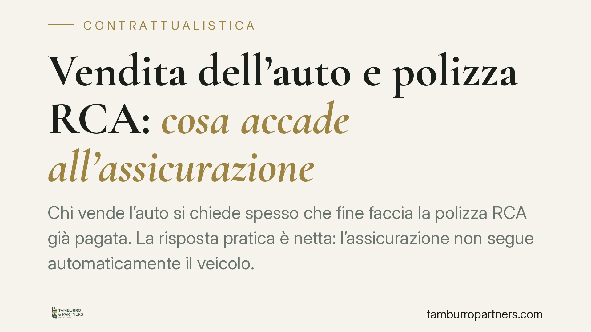

Vendita dell'auto e polizza RCA: cosa accade all'assicurazione
Chi vende l'auto si chiede spesso che fine faccia la polizza RCA già pagata. La risposta pratica è netta: l'assicurazione non segue automaticamente il veicolo. Finché il proprietario non interviene, il contratto resta a suo carico. Esistono però più opzioni per non perdere il premio residuo e la classe di merito maturata. Vediamo cosa prevede la disciplina civilistica e come muoversi.

Il punto di partenza: la polizza resta intestata al venditore
Molti automobilisti pensano che, vendendo l'auto, l'assicurazione "passi" all'acquirente insieme al veicolo. Non è così. La polizza RCA è un contratto stipulato dal contraente con la compagnia: non si trasferisce da solo con il passaggio di proprietà.
Finché il venditore non compie una scelta esplicita, il rapporto assicurativo continua formalmente a fare capo a lui, anche se l'auto è ormai in mani altrui. Da qui l'importanza di attivarsi subito dopo la cessione.
Inquadramento normativo
Il riferimento civilistico rilevante è l'art. 1918 del Codice civile (alienazione della cosa assicurata). La norma stabilisce che, in caso di trasferimento della cosa assicurata, l'alienante deve darne notizia all'assicuratore. In linea di principio i diritti e gli obblighi derivanti dal contratto possono passare all'acquirente, ma la disciplina lascia spazio sia alla continuazione del rapporto sia al suo scioglimento, secondo le condizioni pattuite.
Per la RCA la materia è governata anche dalle condizioni generali di polizza e dalla prassi regolamentare del settore. È quindi corretto ragionare in termini di combinato tra norma civilistica e clausole contrattuali: prima di dare per scontato un effetto automatico, occorre leggere il contratto.
Un ulteriore snodo riguarda l'ipotesi in cui si voglia far subentrare l'acquirente nella stessa polizza. Qui entra in gioco l'art. 1406 del Codice civile (cessione del contratto): la sostituzione di una parte con un terzo richiede il consenso del contraente ceduto, cioè della compagnia assicurativa. Senza tale consenso la cessione non produce effetti.
Le opzioni a disposizione del venditore
Dopo la vendita, il proprietario ha tre strade principali, con effetti giuridici diversi.
1. Sospensione o disdetta della polizza. Il venditore comunica alla compagnia l'avvenuta cessione e chiede di sospendere la copertura o di chiuderla. La classe di merito maturata (Bonus-Malus) resta "congelata" e riutilizzabile, di regola, entro i termini previsti dalle condizioni contrattuali.
2. Voltura sul nuovo veicolo. Se il venditore acquista un'altra auto, può trasferire la polizza sul nuovo mezzo. È la via che consente di conservare senza interruzioni la classe di merito raggiunta.
3. Cessione del contratto all'acquirente. Il venditore può proporre all'acquirente di subentrare nella polizza. Attenzione: come detto, questa operazione integra una cessione del contratto ex art. 1406 c.c. e presuppone il consenso della compagnia. Non basta l'accordo tra venditore e acquirente.
Perché la classe di merito conta
La classe Bonus-Malus rappresenta un valore economico costruito negli anni con una guida senza sinistri. Perderla equivale a ripartire con premi più alti. Per questo, salvo casi particolari, sospendere o volturare la polizza è quasi sempre preferibile alla semplice disdetta a fondo perduto.
Un cenno alla cosiddetta RC familiare: la normativa consente, a determinate condizioni, di applicare la classe di merito più favorevole già presente nel nucleo familiare a un nuovo veicolo. Si tratta però di un meccanismo con regole e limiti propri: va verificato caso per caso, senza generalizzazioni.
Implicazioni pratiche
Per il venditore il rischio principale è duplice: continuare a pagare o restare esposto a un contratto ancora a proprio nome, e perdere il premio residuo o la classe di merito per mancata attivazione. Per l'acquirente, il rischio è credere di essere coperto quando la cessione della polizza non è stata perfezionata con la compagnia.
Cosa fare in concreto
- Comunica subito la vendita alla compagnia, allegando l'atto di trasferimento di proprietà.
- Scegli l'opzione più conveniente: sospensione, voltura sul nuovo veicolo o cessione all'acquirente, valutando l'impatto sulla classe di merito.
- Se opti per la cessione, ottieni il consenso scritto della compagnia: senza di esso il subentro non è efficace.
- Conserva prova scritta di ogni comunicazione e della data di trasferimento del veicolo.
- Leggi le condizioni di polizza per i termini di sospensione e riattivazione della classe di merito.
In caso di dubbio sulla soluzione più adatta, consigliamo di verificare le clausole del contratto e la documentazione di vendita prima di procedere.
---
*Contributo informativo a cura di Tamburro & Partners - Avv. Giuseppe Tamburro. Non costituisce parere legale.*
Ogni contratto ha il suo equilibrio.
Se vuoi una revisione delle clausole o una redazione su misura, scrivi allo studio. Ti rispondiamo entro un giorno lavorativo.